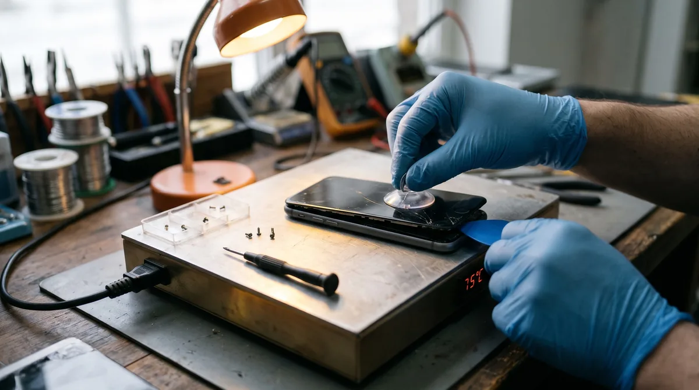
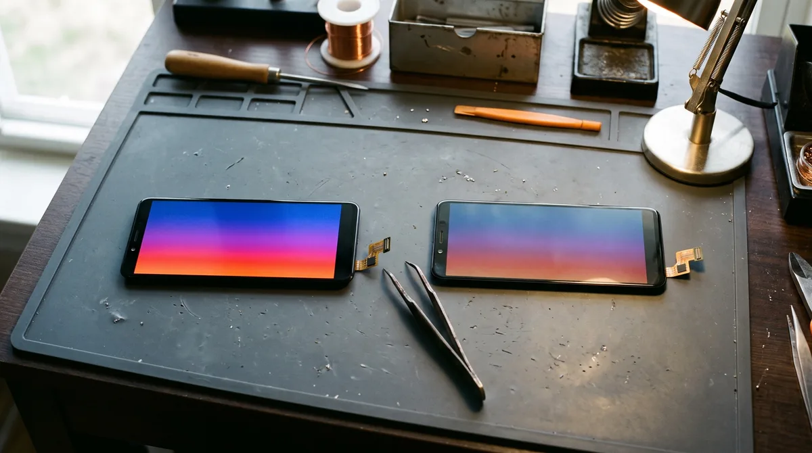

Замена стекла и дисплея на телефоне: что меняют на самом деле и сколько это стоит
Смартфон упал на плитку. По поверхности паутина трещин, но картинка вроде бы цела. Первый вопрос в сервисе обычно такой: «Можно поменять только внешнюю панель? Это же дешевле».
Ответ зависит от конструкции гаджета. У большинства современных аппаратов сенсор и экран спаяны в единый узел, поэтому замену производят целиком. Фразы «замена стекла» и «замена дисплея» в 9 из 10 случаев описывают одну и ту же процедуру. Ниже разберем, когда можно обойтись локальным ремонтом, от чего зависит ценник и сколько ждать готовности.
Сначала проверьте: может, треснуло защитное стекло
Звучит банально, но с этим к нам обращаются регулярно. Если на устройстве была наклейка-протектор, при ударе она принимает удар на себя, оставляя родную поверхность intact.
Как проверить: аккуратно подденьте край ногтем в углу. Защита — это отдельная тонкая пластина, она легко отходит. Если трещины исчезли вместе с ней, аппарат в порядке, нужно лишь наклеить новый протектор. Это дело пяти минут, и стоимость несопоставима с полноценным ремонтом.

Почему стекло отдельно меняют редко
Экран мобильного девайса состоит из нескольких слоев:
- внешнее закаленное покрытие;
- сенсорная панель, реагирующая на касания;
- матрица, формирующая изображение.
Раньше эти компоненты были раздельными, и верхний слой хаменяли изолированно. Сейчас у большинства гаджетов они склеены по всей площади в монолитный блок. Чтобы заменить только один элемент, его нужно отделить на специальном станке, не повредив хрупкую матрицу, затем приклеить новую деталь и убрать пузыри в вакуумной камере.
Это трудоемкий и рискованный процесс: если при разделении треснет основа, придется менять весь узел. Поэтому изолированная замена имеет смысл, только если:
- Матрица полностью исправна: нет пятен, полос, темных участков.
- Сенсор откликается по всей площади.
- Смартфон премиальный, с AMOLED-экраном, и новый оригинальный модуль стоит значительно дороже услуги переклейки.
На бюджетных устройствах разница в цене между переклейкой и новым блоком минимальна, а заводской модуль надежнее. Поэтому там чаще меняют компонент целиком.
Что разбито: внешняя часть или внутренности?
| Что вы видите | Что повреждено | Решение |
|---|---|---|
| Трещины, но картинка чистая, всё нажимается | Только внешнее покрытие | Можно обсудить переклейку или поменять весь блок |
| Часть сенсора не реагирует или телефон «живет своей жизнью» | Сенсорный слой | Требуется поменять дисплейный модуль |
| Чёрные или фиолетовые пятна, кляксы | Матрица | Замена модуля |
| Цветные полосы, мерцание | Матрица или шлейф | Ремонт шлейфа или экрана |
| Экран чёрный, но смартфон звонит и вибрирует | Матрица, подсветка или шлейф | Диагностика, чаще всего замена модуля |
| Зеленая полоса на АМОЛЕД после падения | Матрица | Замена дисплея в сборе |
Не тяните с визитом в сервис, если «пока всё видно». Через трещины внутрь проникают пыль и влага, а осколки со временем продавливают чувствительные слои. Сегодня треснула поверхность, а через месяц появятся черные пятна, требующие полной замены.
IPS или AMOLED: от этого зависит половина цены
Главный фактор стоимости — тип детали.
IPS (TFT, PLS или LCD) — у таких экранов есть отдельная подсветка. Они стоят в недорогих и средних смартфонах. Сама деталь доступнее, следовательно, и ремонт обходится дешевле.
AMOLED (OLED или Super AMOLED) — каждый пиксель светится самостоятельно. Черный цвет здесь глубокий, картинка ярче, а сканер отпечатка обычно встроен прямо в область отображения. Запчасть дороже, поэтому и восстановление обычно в 1,5–2 раза затратнее, чем у ИПС-аналогов.
Оригинал или копия
На популярные устройства обычно есть два-три варианта комплектующих.
| Вариант | Что это | Плюсы | Минусы |
|---|---|---|---|
| Оригинал | Заводская деталь | Цветопередача, яркость и чувствительность как при покупке | Высокая цена, на некоторые девайсы только под заказ |
| Копия OLED | Сторонний АМОЛЕД | Дешевле оригинала, качество картинки близко к заводскому | Яркость и оттенки могут немного уступать |
| Копия IPS (incell, TFT) на AMOLED-смартфон | Дешевая замена на технологию ИПС | Самый бюджетный вариант | Экран толще, черный цвет серый, сканер в экране не работает |
Предупреждаем насчет последней строки отдельно: если у вашего смартфона сканер отпечатка встроен в экран, после установки дешевой копии он перестанет функционировать. Иногда это допустимо ради экономии, но вы должны знать об этом заранее.
Для недорогих девайсов с ИПС копия — нормальный выбор: разница с оригиналом почти незаметна. На флагманы с АМОЛЕД следует ставить оригинал или качественную OLED-версию.

Особенности по маркам
Samsung
У Samsung в одной линейке могут стоять разные типы дисплеев, поэтому надо знать точную модель. Galaxy A50, A51, A52, A54, A55 и вся S-линейка — AMOLED. Младшие A0x и A1x зачастую оснащены ИПС (пример: Galaxy A12), но есть исключения: у Galaxy A15 уже АМОЛЕД.
Оригинальные детали Samsung зачастую поставляются сразу в рамке корпуса. Такой комплект дороже, зато одновременно обновляется погнутая или поцарапанная рамка, и экран встает идеально.
Еще одна особенность: у аппаратов с изогнутыми краями (некоторые линейки S и Note) ремонт сложнее и дороже, а отдельно стекло на них почти никогда не меняют.
Xiaomi, Redmi, Poco
У Redmi без приставки Note (Redmi 9, 10, 12, 13, серия A) — обычно ИПС. Это один из самых доступных видов ремонта.
Redmi Note начиная с 10-й линейки в основном идут с АМОЛЕД, но бывают исключения (пример: Redmi Note 10 5G — ИПС). Poco встречаются разных типов: у X3 — IPS, у X5 Pro — АМОЛЕД.
Запчасти на ходовые Редми обычно есть в наличии, поэтому восстановление проходит быстро.
Honor
Старые версии — Honor 8X, 9X, 10 Lite, 10i — с ИПС. Недорогие X6, X7, X8 — тоже. Средние и дорогие девайсы (X9a, X9b, серии 70, 90) часто оснащены изогнутым АМОЛЕД. Замена такого экрана дороже и дольше: его сложнее демонтировать и установить без зазоров.
Tecno
У Tecno Spark почти всегда IPS. В сериях Camon и Pova встречаются оба типа. Оригинальные запчасти на Tecno найти сложнее, чем на Samsung или Redmi, поэтому обычно ставят качественные аналоги. Для недорогих моделей это хороший вариант.
Infinix
Серия Hot — в основном IPS. В линейке Note встречаются оба типа (у Note 30 — ИПС, у Note 40 — АМОЛЕД). С запасными частями ситуация аналогична Tecno: копии доступнее, оригинал иногда только под заказ.
Realme
Серия C (C30, C51, C55 и другие) — ИПС. Номерные модели (Realme 10, 11, 12) в основном с АМОЛЕД. Отдельно проверяем расположение сканера отпечатка: в кнопке или в модуле. От этого зависит совместимость заменяемой запчасти.
iPhone
У iPhone XR и 11 установлен LCD. У iPhone X, XS и всех девайсов начиная с 12-й линейки — OLED.
После замены дисплея на iPhone 11 и новее в настройках может появиться уведомление о неоригинальной запчасти. Это происходит даже с заводскими запасными частями, если их не перепрограммировать специальным оборудованием. На работу аппарата сообщение не влияет. Также может пропасть функция True Tone, адаптирующая цвета под освещение. Уточняйте возможности для вашей модели заранее.
Сколько времени занимает замена
Если нужная деталь есть в наличии, восстановление занимает от часа до одного-двух дней, девайс может быть готов в тот же день. Если требуется заказ, добавляется время на логистику.
На длительность влияет конструкция: устройство со съемной задней крышкой собирается быстрее, с изогнутым экраном — дольше. Перед звонком уточните точную модель, тогда мы сразу скажем о наличии детали.
Важно: Фото, контакты и переписки при ремонте не пропадают: память не затрагивается.
Сколько стоит?
Позвоните или напишите в Telegram, назовите модель или пришлите фото. На итоговую сумму влияют:
- тип детали;
- вариант (оригинал/копия);
- форма и наличие рамки;
- состояние корпуса.
Большую часть суммы составляет сама запчасть, а не работа мастера. Поэтому разброс цен так велик: деталь для недорогого Redmi и для Samsung Galaxy S стоят несравнимо.
Цену согласуем до начала работ. Если на диагностике окажется, что треснуло только защитное стекло или достаточно переподключить шлейф, менять экранный модуль не будем.
FAQ
Почему вы не меняете только стекло, если матрица целая?
На недорогих телефонах переклейка стоит почти как новый экран, а надежность у нового блока выше. На дорогих моделях переклейку обсуждаем индивидуально.
Будет ли работать отпечаток пальца?
Если сканер в кнопке или на задней панели — да. Если он встроен в экран, функция сохранится с оригиналом или OLED-копией, но не с IPS-аналогом. Об этом предупреждаем до начала работ.
Сохранится ли влагозащита?
После вскрытия ставим новую клеевую прокладку, но герметичность уже не такая идеальная, как с завода. Дождь телефон выдержит, но погружать его в воду не стоит.
Меняем стекла и дисплеи на телефонах в Мариуполе каждый день с 10:00 до 20:00. Можно привезти смартфон или вызвать мастера: в Левобережный район выезд бесплатный. Звоните: +7 949 609-06-43.